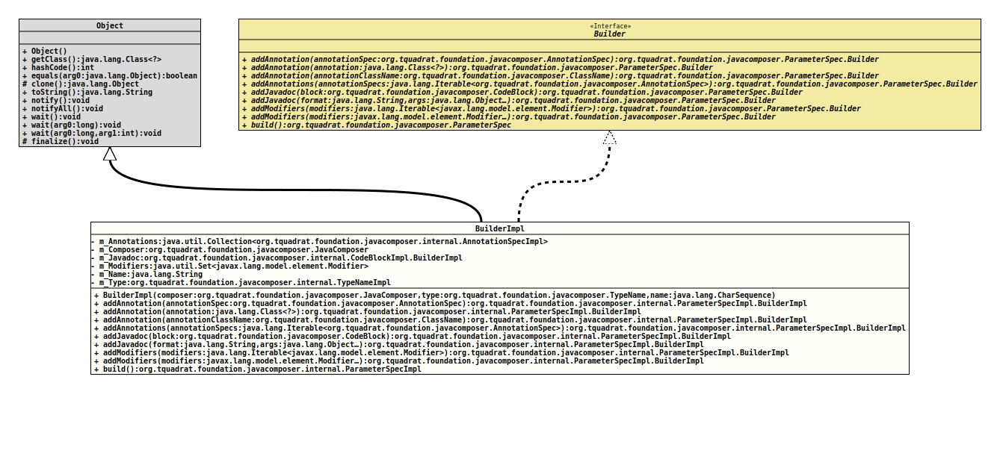

Class ParameterSpecImpl.BuilderImpl
java.lang.Object
org.tquadrat.foundation.javacomposer.internal.ParameterSpecImpl.BuilderImpl
- All Implemented Interfaces:
ParameterSpec.Builder
- Enclosing class:
- ParameterSpecImpl
@ClassVersion(sourceVersion="$Id: ParameterSpecImpl.java 943 2021-12-21 01:34:32Z tquadrat $")
@API(status=INTERNAL,
since="0.0.5")
public static final class ParameterSpecImpl.BuilderImpl
extends Object
implements ParameterSpec.Builder
The implementation of
ParameterSpec.Builder- Author:
- Square,Inc.
- Modified by:
- Thomas Thrien (thomas.thrien@tquadrat.org)
- Version:
- $Id: ParameterSpecImpl.java 943 2021-12-21 01:34:32Z tquadrat $
- Since:
- 0.0.5
- UML Diagram
-

UML Diagram for "org.tquadrat.foundation.javacomposer.internal.ParameterSpecImpl.BuilderImpl"
{kind=link}
-
Field Summary
FieldsModifier and TypeFieldDescriptionprivate final Collection<AnnotationSpecImpl>The annotations for the parameter.private final JavaComposerThe reference to the factory.private final CodeBlockImpl.BuilderImplThe Javadoc comment for the parameter.The modifiers for the parameter.private final StringThe name for the parameter.private final TypeNameImplThe type for the parameter. -
Constructor Summary
ConstructorsConstructorDescriptionBuilderImpl(JavaComposer composer, TypeName type, CharSequence name) Creates a newBuilderImplinstance. -
Method Summary
Modifier and TypeMethodDescriptionaddAnnotation(Class<?> annotation) Adds an annotation for the parameter.addAnnotation(AnnotationSpec annotationSpec) Adds an annotation for the parameter.addAnnotation(ClassName annotationClassName) Adds an annotation for the parameter.addAnnotations(Iterable<AnnotationSpec> annotationSpecs) Adds annotations for the parameter.addJavadoc(String format, Object... args) Adds text to the Javadoc for the parameter.addJavadoc(CodeBlock block) Adds text to the JavaDoc for the parameter.addModifiers(Iterable<Modifier> modifiers) Adds modifiers for the parameter.addModifiers(Modifier... modifiers) Adds modifiers for the parameter.final ParameterSpecImplbuild()Builds a newParameterSpecinstance from the added components.
-
Field Details
-
m_Annotations
The annotations for the parameter. -
m_Composer
The reference to the factory. -
m_Javadoc
The Javadoc comment for the parameter. -
m_Modifiers
The modifiers for the parameter. -
m_Name
The name for the parameter. -
m_Type
The type for the parameter.
-
-
Constructor Details
-
BuilderImpl
Creates a newBuilderImplinstance.- Parameters:
composer- The reference to the factory that created this builder instance.type- The type for the new parameter.name- The name for the new parameter.
-
-
Method Details
-
addAnnotation
Adds an annotation for the parameter.- Specified by:
addAnnotationin interfaceParameterSpec.Builder- Parameters:
annotationSpec- The annotation.- Returns:
- This
Builderinstance.
-
addAnnotation
Adds an annotation for the parameter.- Specified by:
addAnnotationin interfaceParameterSpec.Builder- Parameters:
annotation- The annotation.- Returns:
- This
Builderinstance.
-
addAnnotation
Adds an annotation for the parameter.- Specified by:
addAnnotationin interfaceParameterSpec.Builder- Parameters:
annotationClassName- The name of the annotation class.- Returns:
- This
Builderinstance.
-
addAnnotations
Adds annotations for the parameter.- Specified by:
addAnnotationsin interfaceParameterSpec.Builder- Parameters:
annotationSpecs- The annotation.- Returns:
- This
Builderinstance.
-
addJavadoc
Adds text to the JavaDoc for the parameter.- Specified by:
addJavadocin interfaceParameterSpec.Builder- Parameters:
block- The comment text.- Returns:
- This
Builderinstance.
-
addJavadoc
Adds text to the Javadoc for the parameter.- Specified by:
addJavadocin interfaceParameterSpec.Builder- Parameters:
format- The format.args- The arguments.- Returns:
- This
Builderinstance.
-
addModifiers
Adds modifiers for the parameter.- Specified by:
addModifiersin interfaceParameterSpec.Builder- Parameters:
modifiers- The modifiers.- Returns:
- This
Builderinstance.
-
addModifiers
Adds modifiers for the parameter.- Specified by:
addModifiersin interfaceParameterSpec.Builder- Parameters:
modifiers- The modifiers.- Returns:
- This
Builderinstance.
-
build
Builds a newParameterSpecinstance from the added components.- Specified by:
buildin interfaceParameterSpec.Builder- Returns:
- The new
ParameterSpecinstance.
-